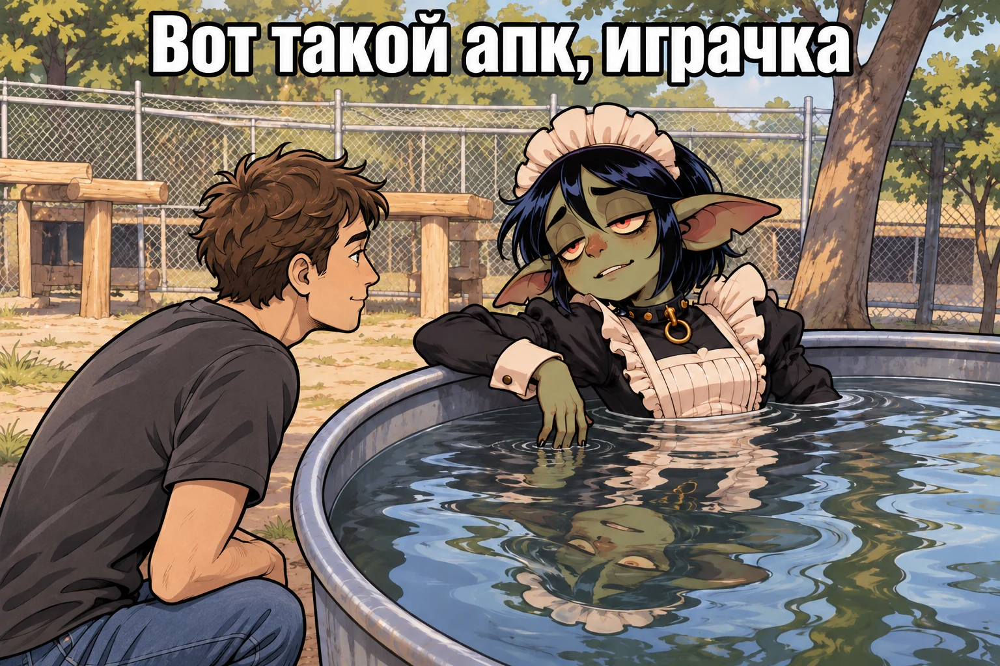
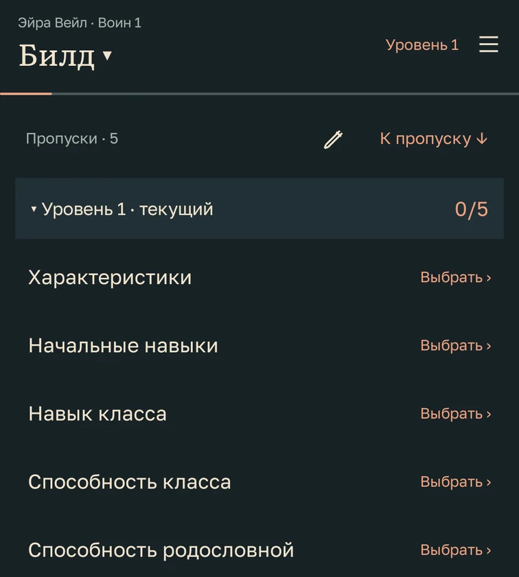
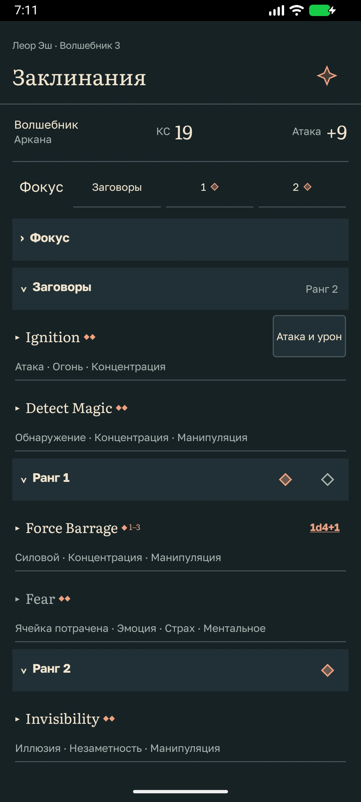
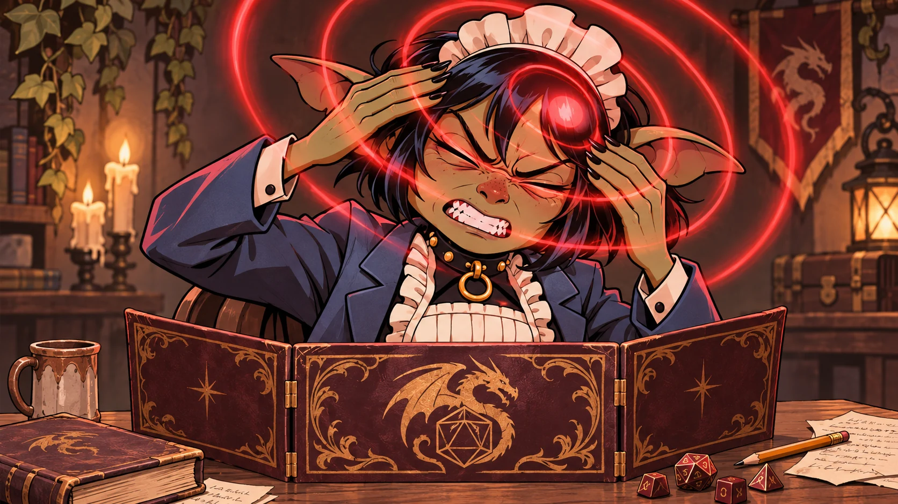

Pathmaid · Pathfinder 2e character sheet
Character first.
Stats second.
Your longsword, Hit Points, and favorite spell. Put the things your character reaches for on one screen.

Tilta, what does Pathmaid do?
It’s a Pathfinder 2e character sheet for Android. You can build your character here or bring one over from Pathbuilder with a JSON file or ID.
Before the game, set up your dashboard the way you like it. Put your sword next to your Hit Points and your favorite spell. When the GM says it’s your turn, tap the sword. I’ll roll the d20 and show you the damage.

-
Character build ↗

Choose your ancestry, class, and feats. The sheet shows which choices you still have to make at each level.
-
Spells ↗

See what you prepared today and which slots you’ve spent. Roll damage straight from the spellbook.
-
Weapons and attacks ↗

Each attack has its own modifier. Tap the one you’re making to roll the attack and damage for that weapon.
-
Free pets and eidolons ↗

Add a pet or an eidolon to your character. Each gets a sheet of its own. An eidolon shares Hit Points with its summoner.


Planned · GM connection
GM, do you copy?
We plan to connect your character sheet to the GM’s Pathmaid app. You’ll be able to send a signal from your phone, and your GM will see it behind the screen.

Fuck Google Arasaka
We still need more testers before we can launch on Google Play. Once we have a group and finish testing the build, we’ll submit it for review. You can already play by installing the APK.

Installation
Bring your hero
to the next game.
ARM64 works for most phones. The current release is listed as PathMaid M.